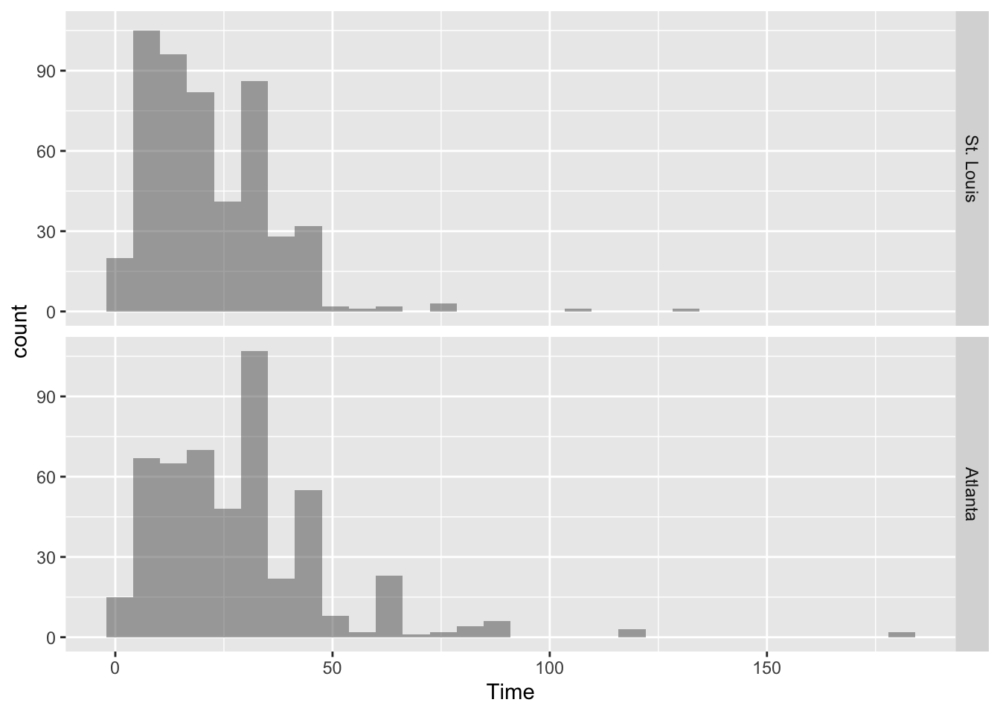
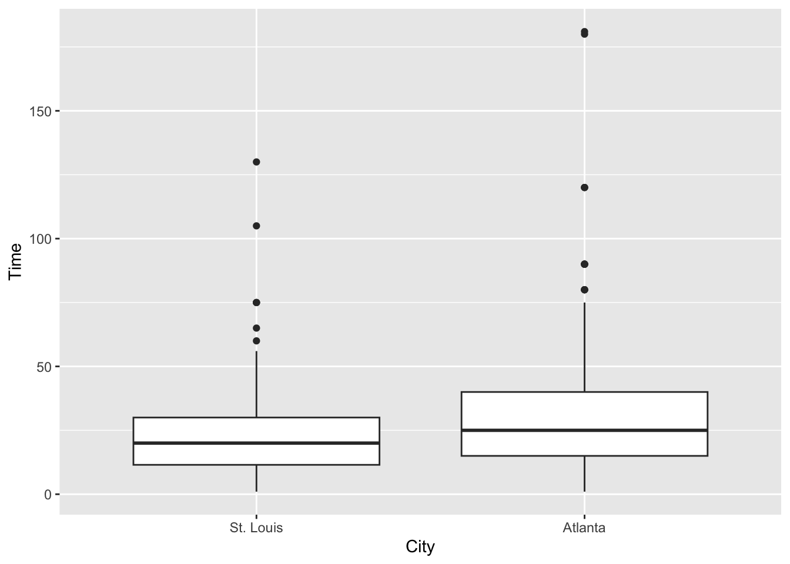
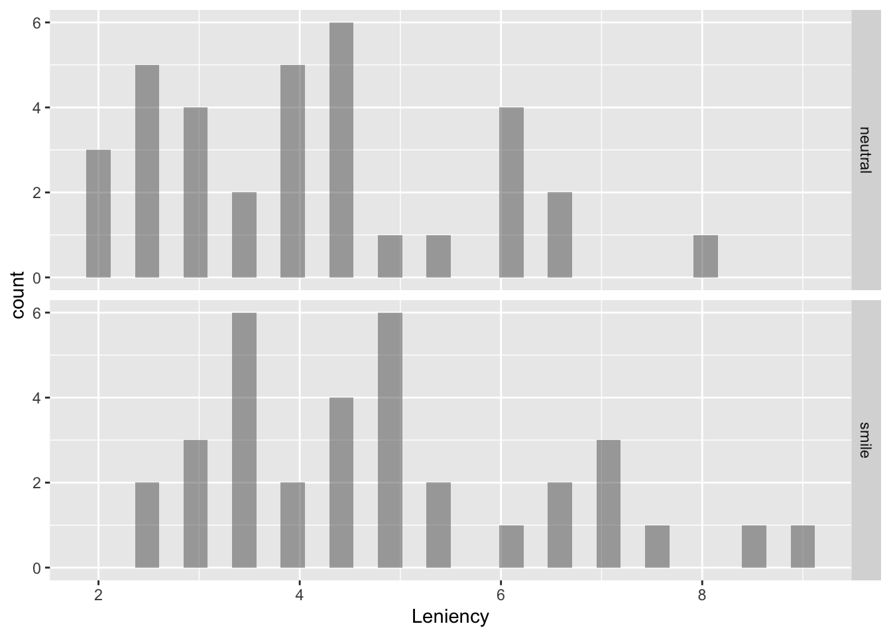
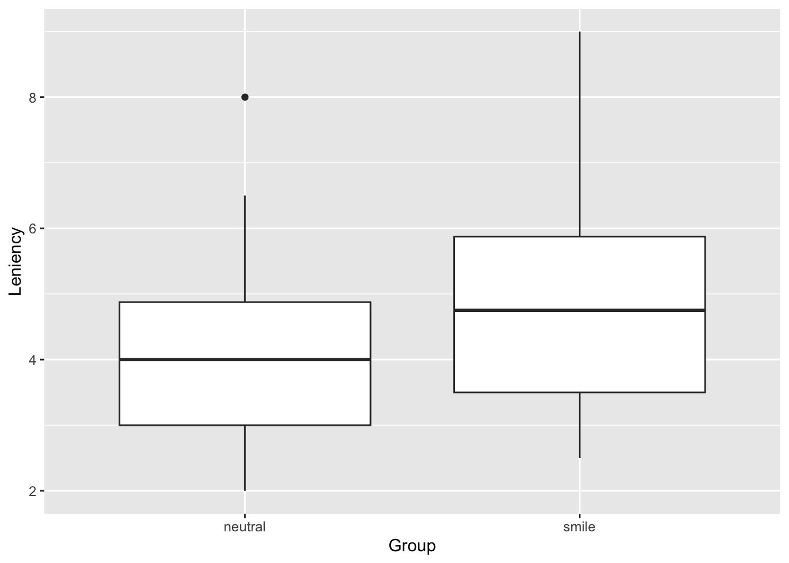

Section 6.4: Two-Sample Inference for Means with R
This help sheet shows how to use built-in R procedures to carry out examples of two-sample inference for means in Section 6.4. The primary R procedure for t inference is t.test().
6.4-CI Confidence Interval for a Difference in Means
Example 6.26
head(CommuteStLouis)
City Age Distance Time Sex
1 St. Louis 52 10 20 M
2 St. Louis 21 35 40 F
3 St. Louis 23 40 45 F
4 St. Louis 38 0 2 M
5 St. Louis 26 15 25 M
6 St. Louis 46 7 12 M
favstats(~Time, data = CommuteStLouis)
min Q1 median Q3 max mean sd n missing
1 11.5 20 30 130 21.97 14.2324 500 0
head(CommuteAtlanta)
City Age Distance Time Sex
1 Atlanta 19 10 15 M
2 Atlanta 55 45 60 M
3 Atlanta 48 12 45 M
4 Atlanta 45 4 10 F
5 Atlanta 48 15 30 F
6 Atlanta 43 33 60 M
favstats(~Time, data = CommuteAtlanta)
min Q1 median Q3 max mean sd n missing
1 15 25 40 181 29.11 20.7183 500 0
The following questions assume we have a single data set. We can stack the two into one data frame called commmutedata using the following R code.
Check for normality of the distributions with histograms and boxplots. First, histograms:
gf_histogram(~Time | City ~ ., data = commutedata)

Next, boxplots comparing times for the cities:
gf_boxplot(Time ~ City, data = commutedata)

Obtain a 90% confidence interval for the difference in population means using the t.test() function with formula notation (y~x):
t.test(Time ~ City, data = commutedata, conf.level =0.90)
Welch Two Sample t-test
data: Time by City
t = -6.352, df = 884.2, p-value = 3.4e-10
alternative hypothesis: true difference in means between group St. Louis and group Atlanta is not equal to 0
90 percent confidence interval:
-8.99093 -5.28907
sample estimates:
mean in group St. Louis mean in group Atlanta
21.97 29.11
If we just want the confidence interval, we can wrap confint() around the t.test() function as shown below but this is not necessary:
confint(t.test(Time ~ City, data = commutedata, conf.level =0.90))
mean in group St. Louis mean in group Atlanta lower upper level
1 21.97 29.11 -8.99093 -5.28907 0.9
gf_histogram(~Leniency | Group ~ ., data = Smiles)

Now here’s a boxplot similar to the one in Figure 6.19 on p. 495.
gf_boxplot(Leniency ~ Group, data = Smiles)

Use the t-distribution to test whether the mean leniency score for smiling students is higher than the mean score for students with a neutral expression.
t.test(Leniency ~ Group, alt ="less", data = Smiles)
Welch Two Sample t-test
data: Leniency by Group
t = -2.042, df = 65.37, p-value = 0.0226
alternative hypothesis: true difference in means between group neutral and group smile is less than 0
95 percent confidence interval:
-Inf -0.145104
sample estimates:
mean in group neutral mean in group smile
4.11765 4.91176
R reports t=-2.04 with p-value=0.02223 on 65.367 degrees of freedom.